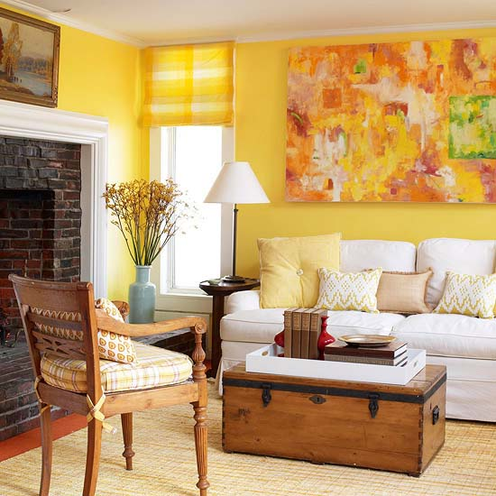
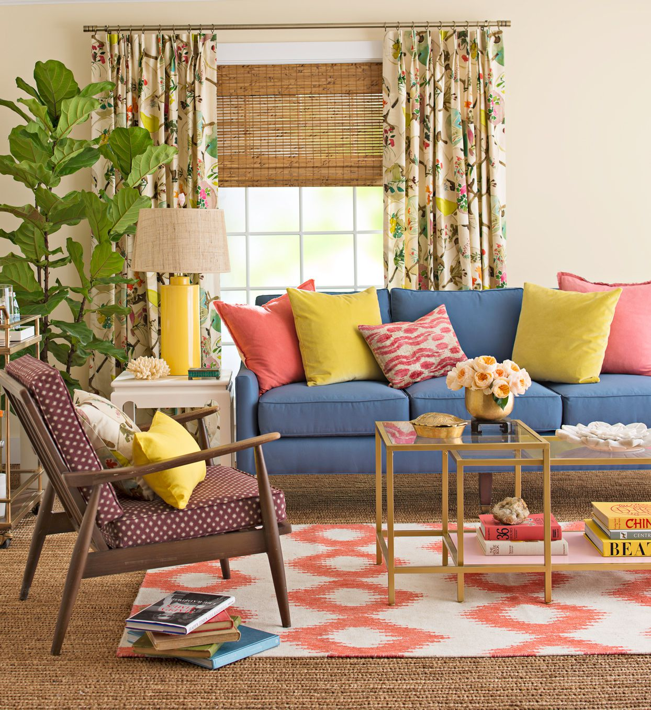
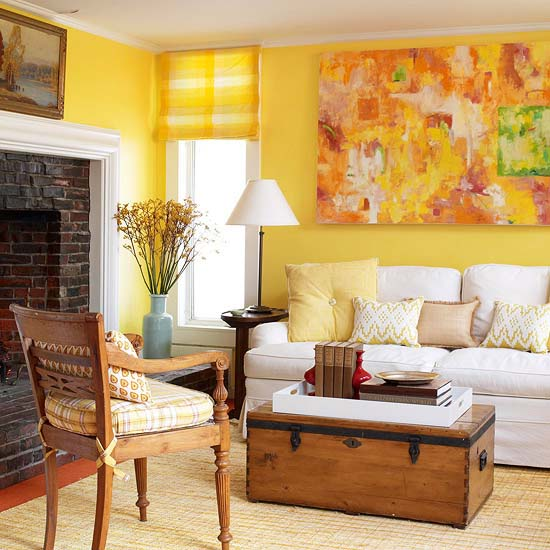
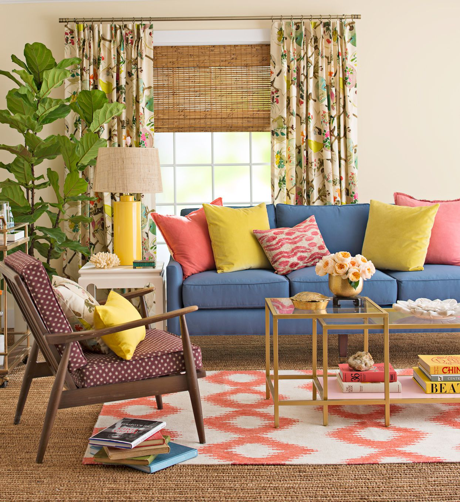

Корисні поради:
створюємо ідеальний інтер’єр
Планування інтер'єру – це справжнє мистецтво, яке потребує уваги до деталей. Нижче ми поділимося кількома порадами, які допоможуть вам зробити простір стильним, комфортним і гармонійним.
Як правильно вибрати кольорову гаму для інтер’єру?
Вибір кольорової гами для інтер’єру — це не лише естетичний вибір, але й важливий етап, який може впливати на загальне сприйняття простору. Правильний підхід до кольорів здатен створити гармонійну атмосферу, покращити настрій і навіть збільшити функціональність кімнат. Ось кілька порад, які допоможуть зробити правильний вибір:
1. Враховуйте призначення кімнати
Кожен колір має свої психо-emоційні характеристики, і важливо підібрати відповідну палітру залежно від того, як ви хочете почуватися в приміщенні:
- Спа-атмосфера: Для ванної чи спальні ідеально підійдуть м’які пастельні відтінки (блакитний, ніжно-зелений, пісочний). Вони заспокоюють і сприяють релаксації.
- Активні простори: Для кухні чи вітальні можна вибрати більш яскраві та енергійні кольори, такі як червоний або оранжевий, які стимулюють апетит та комунікацію.
2. Гармонія з природним освітленням
Натуральне світло сильно впливає на те, як ми сприймаємо кольори. У темних кімнатах варто вибирати світліші та тепліші відтінки, щоб збільшити відчуття простору. У кімнатах з великими вікнами можна сміливо експериментувати з більш насиченими кольорами.
3. Вибір акцентних кольорів
Основні кольори стін не обов'язково повинні бути яскравими. Важливо додавати акценти за допомогою меблів, текстилю чи декоративних елементів. Наприклад, обираючи нейтральні відтінки для стін (сірий, білий, бежевий), можна зробити акценти на яскравих подушках, картинах або килимах.
4. Врахуйте психоемотивні ефекти кольорів
- Синій та зелені відтінки викликають відчуття спокою і допомагають знизити рівень стресу.
- Червоний та оранжевий підвищують енергійність і активність, але вимагають поміркованого використання.
- Жовтий може створювати відчуття тепла та радості, проте у великих кількостях може бути занадто дратівливим.
 



5. Правило "60-30-10"
Щоб створити гармонійну та збалансовану кольорову композицію в інтер’єрі, скористайтеся класичним правилом "60-30-10":
- 60% — це основний колір, який визначатиме загальний фон простору (наприклад, колір стін).
- 30% — додатковий колір, який створюватиме контраст або підкреслюватиме основний колір (наприклад, меблі або текстиль).
- 10% — акцентний колір, який додається для виділення певних елементів і створення інтересу (наприклад, декоративні елементи, картини, подушки).
Це правило дозволяє створити збалансовану палітру, де основні кольори не "заглушають" один одного, а кожен з них має свою роль у загальній композиції.
6. Створення балансу
Не варто використовувати лише один колір у всіх елементах інтер’єру. Важливо створювати баланс, поєднуючи різні відтінки, текстури та матеріали. Наприклад, стіни можуть бути одного кольору, а меблі – іншого, з додаванням акцентів у вигляді декоративних елементів, щоб створити динамічний, але збалансований простір.
Правильний вибір кольорової гами — це процес, який потребує уваги до деталей і розуміння того, як кольори впливають на наше самопочуття. Гармонія між кольором стін, меблями, текстилем та декоративними елементами допоможе створити атмосферу, яка буде не тільки приємною для ока, але й комфортною для життя.
Освітлення для створення настрою:
як світло впливає на атмосферу в інтер’єрі
Освітлення відіграє ключову роль у створенні затишку в домі. Воно не просто освітлює приміщення, а й формує його атмосферу, впливає на настрій і навіть може змінювати сприйняття простору. М'яке світло допомагає розслабитися після напруженого дня, тоді як яскраве й насичене сприяє концентрації та активності. Вдале поєднання різних джерел світла дозволяє створити гармонійний інтер’єр, який змінюється відповідно до ваших потреб та настрою.
1. Тепле чи холодне світло?
Одним із найважливіших аспектів освітлення є його температура. Вона безпосередньо впливає на сприйняття простору та емоційний стан людини.
Тепле світло, що має жовтуватий відтінок (2700–3000K), створює затишну та розслаблену атмосферу. Саме тому його часто використовують у спальні, вітальні або їдальні, де важливо відчувати комфорт і спокій. Воно нагадує природне сяйво свічок чи заходу сонця, що робить інтер’єр більш гостинним і приємним.
Холодне світло (4000–6000K), навпаки, додає простору динаміки та свіжості. Воно більше схоже на денне сонячне світло і сприяє активності, концентрації та роботі. Таке освітлення ідеально підходить для робочих зон, кухонь та ванних кімнат, де важлива чіткість деталей та бадьорість.
2. Як освітлення впливає на настрій?
Світло має здатність впливати на наші емоції та навіть біологічні ритми. Яскраве біле світло підсилює відчуття простору, допомагає прокинутися зранку та налаштуватися на продуктивний день. Розсіяне або приглушене освітлення, навпаки, знімає напругу та допомагає підготуватися до сну.
Щоб створити ідеальну атмосферу вдома, варто використовувати кілька рівнів освітлення. Основне (люстри або вбудовані світильники) забезпечує загальне освітлення, функціональне (бра, настільні лампи) допомагає працювати або читати, а декоративне (LED-стрічки, свічки, гірлянди) додає затишку та стилю.
Не варто забувати і про кольорове освітлення. Ніжні відтінки рожевого чи блакитного можуть створити романтичний настрій, а яскраве неонове підсвічування – додати енергії та драйву. За допомогою розумних ламп або диммерів можна легко змінювати інтенсивність світла, адаптуючи простір під різні потреби – від роботи до вечірнього відпочинку.
3. Освітлення як частина дизайну
Крім функціональної ролі, світильники самі по собі можуть стати важливими елементами декору. Вони додають індивідуальності приміщенню та підкреслюють стиль інтер’єру. Мінімалістичні трекові світильники чудово вписуються в сучасний дизайн, а вінтажні лампи Едісона – у лофт або ретро-стиль.
Гра з тінями та відбиттями також допомагає створити особливий ефект. Настінні бра з м’яким розсіяним світлом додають стінам глибини, а дзеркала з підсвічуванням візуально розширюють простір.

Освітлення – це не просто технічний аспект інтер’єру, а потужний інструмент для створення настрою та атмосфери. Грамотно підібране світло може зробити простір більш затишним, стильним і функціональним. Важливо експериментувати, комбінувати джерела освітлення та адаптувати їх під свої потреби – адже саме деталі роблять будинок по-справжньому комфортним.
Вибір меблів та зонування:
як створити ідеальний простір
Грамотно обрані меблі та продумане зонування – це ключ до створення комфортного та функціонального інтер'єру. Кожне приміщення має свої особливості, і важливо правильно використовувати кожен квадратний метр, аби житло було не лише естетично привабливим, а й зручним у повсякденному житті.
1. Як правильно зонувати простір?
Перед тим як вибирати меблі, варто визначити, які функціональні зони потрібні у приміщенні. Наприклад, у вітальні часто поєднують зону відпочинку, робоче місце та обідню частину. Важливо, щоб вони не заважали одна одній, а навпаки – гармонійно співіснували. Зонування можна здійснити за допомогою різних прийомів:
- Перегородки або стелажі. Вони допоможуть відокремити одну зону від іншої, не обтяжуючи простір.
- Килими та освітлення. Використання різних джерел світла та текстур підлоги дозволяє візуально розділити простір.
- Колір та матеріали. Поєднання контрастних кольорів і фактур додає об’єму і чітко виділяє функціональні області.
Наприклад, у студійній квартирі килим може позначати зону вітальні, а кухня буде виділена за рахунок плиткового покриття або іншого типу підлоги.
2. Як вибрати меблі?
Вибір меблів залежить від розмірів приміщення, стилю інтер'єру та особистих потреб. Головне – не перевантажувати простір зайвими предметами. Компактні та багатофункціональні меблі ідеально підходять для невеликих приміщень.
- Меблі з вбудованими місцями для зберігання допоможуть підтримувати порядок, зменшуючи кількість відкритих полиць і зайвого декору.
- Розкладні столи та дивани – ідеальний варіант для малогабаритних квартир.
- Модульні меблі дозволяють легко змінювати планування кімнати залежно від потреб.
3. Баланс стилю та функціональності
Оберіть стиль, який відповідає вашому способу життя. Наприклад, для мінімалістичного інтер'єру краще підходять світлі кольори, прості форми та натуральні матеріали, тоді як стиль лофт відрізняється використанням грубих текстур, металу та дерева.
Головне – створити простір, у якому буде зручно жити. Вдалий вибір меблів і розумне зонування допоможуть зробити будь-яке приміщення затишним, стильним і практичним.
Кольори в інтер’єрі: поєднання та готові комбінації
Правильне поєднання кольорів допомагає створити гармонійну атмосферу в будь-якому просторі. Дізнайтеся, які кольори пасують один до одного та які готові схеми дизайну використовують професіонали.
Примітка: Якщо фрейм не відображається, перегляньте статтю за цим посиланням.